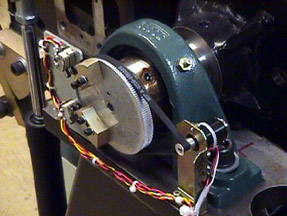

Operating Documentation
Direction 5114045-800, Rev# 10
LightSpeed 4.X Service Information (Advanced)
Operating Documentation |
| Required Persons | Preliminary Reqs | Procedure | Finalization |
|---|---|---|---|
| 1 |
| Last Revised: | February 23, 2004 |
| Item | Qty | Effectivity | Part# | Manufacturer | |
|---|---|---|---|---|---|
| Phillips #2 screwdriver | 1 | - | - | - | |
| Flat-blade screwdriver | 1 | - | - | - | |
| 3/32 hex key | 1 | - | - | - | |
| 3 mm, 5 mm hex keys | 1 | - | - | - | |
| Item | Qty | Effectivity | Part# | Manufacturer | |
|---|---|---|---|---|---|
| Tilt Pot Assembly | 1 | - | - | - | |
Remove gantry side covers.
Turn OFF all 3 switches (Axial Drive, HVDC, 120VAC) on the STC backplane.
Remove 3 hex screws that secure tilt pot cover and remove (reference Illustration 1).
Illustration 1: Gantry Tilt Pot Assembly 2178677

Loosen the 2 hex screws that tension the belt.
Remove belt off the small pulley.
Disconnect tilt pot connector.
Cut ty-raps as necessary.
Remove hex screws that secure tilt pot.
Remove tilt pot assembly.
Install new tilt pot assembly and adjust per “Tilt Pot and Belt Adjustment” located in Tilt Pot Assembly Adjustments - Angle, Limit procedure.
Reassemble gantry.
Verify full range of tilt operation.